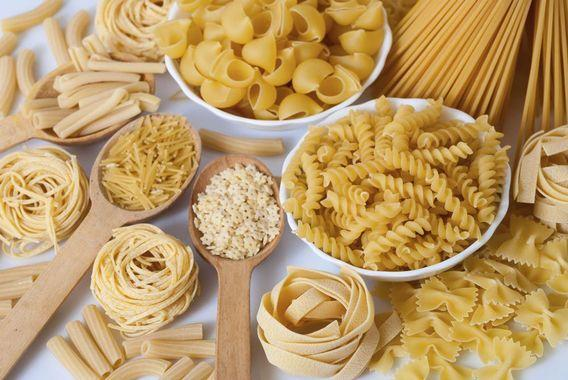

Les différentes sortes de pâtes dans le monde
Les pâtes que l'on retrouve le plus souvent sont bien évidemment les spaghetti, les coquillettes, les torsades, les farfalle, les macaronis ect... 
Sources
source wipipédia pâtes